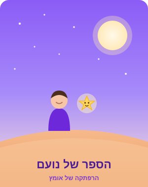

✨ גיבורים קטנים

הספר של נועם
עמוד 3 מתוך 12
2:14
7:38
⟲
15
⏸
15
⟳
מצב האזנה — מתנגן, מתקדם לבד מעמוד לעמוד
✨ גיבורים קטנים
הספר של נועם
▶
התחילו להאזין
הספר יתנגן מעצמו מתחילתו ועד סופו
מסך פתיחה — לחיצה אחת מפעילה ואז זה אוטומטי